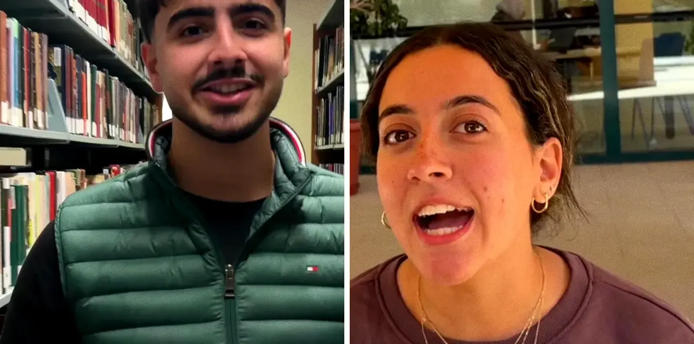

A student-run symposium about who the digital world leaves out. Answer 3 questions to see where you'd fit, or ask our chatbot anything.
Three taps. You get a track, a level and what you'd get out of it.
Bosla (بوصلة, compass) is the campaign's chatbot. Ask the awkward questions. It's told not to promise anything we can't back up.
Real talk: the EGP 300,000 prize pool is a goal, the 30+ partners are potential, and no roles are handed out before the vote. We'd rather tell you now.
Put yourself on the map.
vote jad + kenzie
A student campaign page for the 2027 Tomorrow's Leaders Annual Symposium chair election at AUC. Photos are stills from the campaign's own video. Nothing here is an official TL announcement.